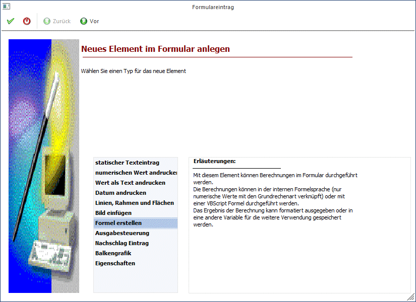
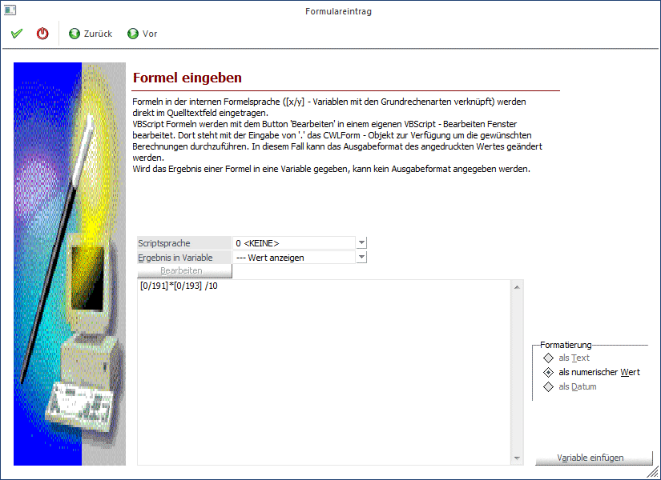
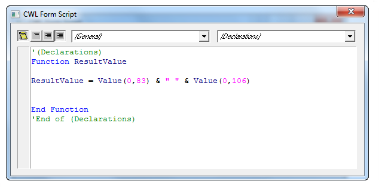
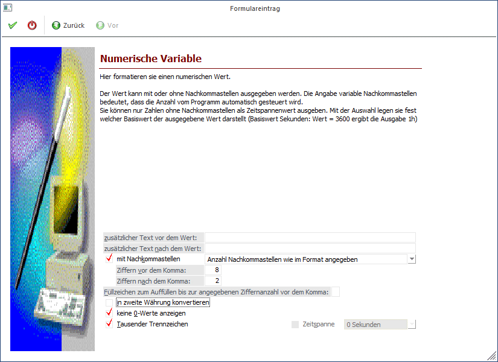

Mit dieser Option können Rechenoperationen oder auch andere Formeln in das Formular eingebaut werden. Diese Option steht nur dann zur Verfügung, wenn die entsprechende Lizenz vorhanden ist.
Schritt 1
Bei der Auswahl des neuen Elements wird die Option "Formel erstellen" ausgewählt.

Durch Anklicken des VOR-Buttons gelangt man in das nächste Fenster, wo die Formel erfasst werden kann.
Schritt 2

Ø Scriptsprache
Aus der Auswahllistbox kann gewählt werden, in welcher "Formelsprache" die Formel erfasst werden soll. Dabei stehen die Optionen
ü <KEINE>
Das ist die
WinLine-Formelsprache, bei der nur die Grundrechnungsarten und Klammern
unterstützt werden. Zuordnungen können damit nicht durchgeführt werden.
ü VBScript
Die Formel kann in der
Sprache VB-Script erfasst werden, wobei hier auch alle Funktionen von VB-Script
verwendet werden können.
ü JScript
Die Formel kann in der
Sprache Java-Script erfasst werden, wobei hier auch alle Funktionen von
Java-Script verwendet werden können.
zur Verfügung. Wurde VBScript oder JScript ausgewählt, steht auch der Button "Bearbeiten" zur Verfügung. Dadurch wird ein Fenster geöffnet, in dem die Formel eingegeben werden kann.

Ø Ergebnis in Variable
Aus der Auswahllistbox kann eine Variable ausgewählt werden, in die das Ergebnis der Formel gerechnet werden soll - unabhängig, ob es sich um eine "normale" Formel oder um eine VB-Script Formel handelt. Dabei gibt drei Möglichkeiten:
ü Wert anzeigen
Bei dieser Option
wird das Ergebnis einfach angedruckt
ü Benutzerdefinierte numerische
Variable
Hier können bis zu 10 verschiedenen Werte ausgewählt werden, wobei
das Ergebnis immer eine Zahl sein muss (bei einer Rechenoperation wird ein
numerischer Wert verwendet werden müssen).
ü Benutzerdefinierte allgemeine
Variable
Hier können bis zu 255 verschiedene Textvariablen angesprochen
werden, wobei der Inhalt auch alphanumerisch sein kann.
Bei normalen Formeln wird das Ergebnis immer als numerischer Wert ausgegeben.
Bei Verwendung dieser Option "Ergebnis in Variable" kann auch das Ausgabeformat (Formatierung) gewählt werden, wobei die Optionen
ü als Text
Das Ergebnis wird
nicht formatiert ausgegeben
ü als Numerischer Wert
Das
Ergebnis wird als Zahl formatiert ausgegeben
ü als Datum
Das Ergebnis wird als
Datum formatiert ausgegeben
zur Verfügung stehen.
Ø Eingabefeld
Im Eingabefeld wird die Formel erfasst, wobei die Variablen in Form von [x/y] eingegeben werden müssen (x steht für View, y steht für Var).
Für Rechenoperationen werden die entsprechenden Operationstasten auf der Tastatur verwendet. Dabei sind folgende Operatoren möglich:
+ Addition
- Subtraktion
* Multiplikation
/ Division
( linke Klammer
) rechte Klammer
Prinzipiell gibt es keine Komplexitäts-Beschränkung für Formeln, so dass alle Möglichkeiten des Programms voll ausgenutzt werden können.
Es ist jedoch zu beachten, dass die Regel "Punktrechnung vor Strichrechnung" nicht gilt. Daher müssen entsprechende Klammerungen verwendet werden.
Durch Anklicken des VOR-Buttons können weitere Einstellungen zum Andruck der Variable eingegeben werden. Durch Anklicken des ZURÜCK-Buttons kann nochmals der Typ verändert werden. Durch Drücken der F5-Taste wird der Eintrag in das Formular übernommen. Durch Drücken der ESC-Taste wird das Fenster geschlossen.
Schritt 3

Im 3. Schritt können zusätzliche Einstellungen für den Andruck vorgenommen werden:
Ø zusätzlicher Text vor dem Wert
Wird in diesem Feld etwas eingetragen, dann wird der Variable ein Text vorangestellt, d.h. vor dem Wert wird noch eine dazugehörige Bezeichnung angedruckt (Führungstext).
Ø zusätzlicher Text nach dem Wert
Wird in diesem Feld etwas eingetragen, dann wird nach der Variable ein Text angedruckt.
Ø Mit Nachkommastellen
Wird diese Option aktiviert, dann erfolgt die Ausgabe des Wertes mit Nachkommastellen, wobei die Anzahl der Nachkommastellen frei definiert werden kann:
ü Anzahl Nachkommastellen wie im
Format angegeben
Mit dieser Einstellung wird die Zahl so angedruckt, wie sie
in den nachfolgenden Feldern ("Ziffern vor dem Komma" und "Ziffer nach dem
Komma" hinterlegt werden. Das ist die Standardeinstellung und kann bei einem
Grußteil der numerischen Werte verwendet werden.
ü Anzahl Nachkommastellen lt. Menge
1 (Artikelgruppe)
Mit dieser Einstellung wird die Anzahl der Nachkommastellen
verwendet, die bei der Menge1 in den Artikelgruppen hinterlegt ist. Diese Option
wird nur dann verwendet werden, wenn Mengen (Belegformulare) angedruckt
werden.
ü Anzahl Nachkommastellen lt. Menge
2 (Artikelgruppe)
Mit dieser Einstellung wird die Anzahl der Nachkommastellen
verwendet, die bei der Menge2 in den Artikelgruppen hinterlegt ist. Diese Option
wird nur dann verwendet werden, wenn Mengen (Belegformulare) angedruckt
werden.
ü Anzahl Nachkommastellen lt.
Einzelpreis (Artikelgruppe)
Mit dieser Einstellung wird die Anzahl der
Nachkommastellen verwendet, die beim Preis in den Artikelgruppen hinterlegt ist.
Diese Option wird nur dann verwendet, wenn unterschiedliche Einstellungen bei
den Preisen verwendet werden, die auch beim Ausdruck berücksichtigt werden
sollen.
ü Anzahl Nachkommastellen lt.
Mandantenstamm
Mit dieser Einstellung wird die Anzahl der Nachkommastellen
aus dem Mandantenstamm verwendet.
Ø Ziffern vor dem Komma
In diesem Feld kann die Anzahl der Ziffern angegeben werden, die vor dem Komma gedruckt werden sollen. Standardmäßig werden 8 Stellen vor dem Komma vorgeschlagen.
Ø Ziffern nach dem Komma
Dieses Feld ist nur dann aktiv, wenn die Option "mit Nachkommastellen" aktiviert ist, wobei hier die Anzahl der Nachkommastellen (max. 6) hinterlegt werden können. Standardmäßig werden 2 Nachkommastellen vorgeschlagen
Ø Füllzeichen zum Auffüllen bis zur angegebenen Ziffernanzahl vor dem Komma
Abhängig von der Anzahl der anzudruckenden Zeichen (einzustellen im Feld "Ziffern vor dem Komma") und des angedruckten Wertes wird das Feld mit dem hinterlegten Zeichen aufgefüllt (z.B. * auf einem Zahlschein).
Ø in zweite Währung konvertieren
Ist diese Checkbox aktiviert, wird der Wert in die zweite Währung, die im Mandantenstamm hinterlegt ist, umgerechnet. Damit können alle Werte in beiden verwendeten Währungen angedruckt werden.
Ø keine 0-Werte anzeigen
Bei aktivierter Option wird der Andruck von Null-Werten verhindert. D.h. ist der Wert 0, wird nichts angedruckt - auch nicht 0.
Ø Tausender Trennzeichen
Ist diese Option aktiviert, dann werden die Tausender Trennzeichen gemäß den Ländereinstellungen angedruckt.
Ø Zeitspanne
Diese Option rechnet einen Wert in eine Zeitangabe um. Diese Option kann nur bei speziellen Datenfeldern (z.B. in der Produktion) verwendet werden.
Durch Anklicken des ZURÜCK-Buttons kann die hinterlegte Formel verändert werden. Durch Drücken der F5-Taste wird der Eintrag in das Formular übernommen. Durch Drücken der ESC-Taste wird das Fenster geschlossen.